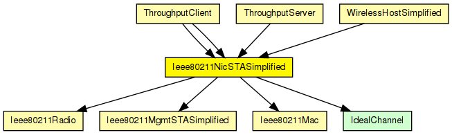
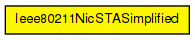

This NIC implements an infrastructure mode 802.11 network interface card for a host (STA), but using a simplified mgmt module that does not support handovers.

The following diagram shows usage relationships between types. Unresolved types are missing from the diagram.
The following diagram shows inheritance relationships for this type. Unresolved types are missing from the diagram.
| Name | Type | Description |
|---|---|---|
| ThroughputClient | compound module | (no description) |
| ThroughputClient | compound module | (no description) |
| ThroughputServer | compound module | (no description) |
| WirelessHostSimplified | compound module |
Models a host with one wireless (802.11b) card in infrastructure mode, but using a simplified NIC that does not support handovers. This module is basically a StandardHost with an Ieee80211NicSTASimplified added. It should be used in conjunction with WirelessAPSimplified, or any other AP model which contains Ieee80211NicAPSimplified. |
| Name | Value | Description |
|---|---|---|
| display | i=block/ifcard |
| Name | Direction | Size | Description |
|---|---|---|---|
| uppergateIn | input |
to upper layers |
|
| uppergateOut | output |
from upper layers |
|
| radioIn | input |
to receive AirFrames |
| Name | Type | Default value | Description |
|---|---|---|---|
| mgmt.accessPointAddress | string |
MAC address of associate AP |
|
| mgmt.frameCapacity | int | 100 | |
| mac.address | string | "auto" |
MAC address as hex string (12 hex digits), or "auto". "auto" values will be replaced by a generated MAC address in init stage 0. |
| mac.maxQueueSize | int |
max queue length in frames; only used if queueModule=="" |
|
| mac.bitrate | double | ||
| mac.rtsThresholdBytes | int | 2346B |
longer messages will be sent using RTS/CTS |
| mac.retryLimit | int | -1 |
maximum number of retries per message, -1 means default |
| mac.cwMinData | int | -1 |
contention window for normal data frames, -1 means default |
| mac.cwMinBroadcast | int | -1 |
contention window for broadcast messages, -1 means default |
| mac.mtu | int | 1500 | |
| radio.channelNumber | int | 0 |
channel identifier |
| radio.transmitterPower | double | 20mW |
power used for transmission of messages (in mW) |
| radio.bitrate | double |
(in bits/s) |
|
| radio.thermalNoise | double | -110dBm |
base noise level (dBm) |
| radio.pathLossAlpha | double | 2 |
used by the path loss calculation |
| radio.shadowingDeviation | double | 0dB |
used by the shadowing model calculation |
| radio.snirThreshold | double | 4dB |
if signal-noise ratio is below this threshold, frame is considered noise (in dB) |
| radio.sensitivity | double |
received signals with power below sensitivity are ignored |
// // This NIC implements an infrastructure mode 802.11 network interface card // for a host (STA), but using a simplified mgmt module that does not // support handovers. // module Ieee80211NicSTASimplified { parameters: @display("i=block/ifcard"); gates: input uppergateIn; // to upper layers output uppergateOut; // from upper layers input radioIn @labels(AirFrame); // to receive AirFrames submodules: mgmt: Ieee80211MgmtSTASimplified { parameters: @display("p=96,69;q=wlanDataQueue"); } mac: Ieee80211Mac { parameters: queueModule = "mgmt"; @display("p=96,155"); } radio: Ieee80211Radio { parameters: @display("p=96,240"); } connections: radioIn --> radio.radioIn; radio.uppergateOut --> mac.lowergateIn; radio.uppergateIn <-- mac.lowergateOut; mac.uppergateOut --> mgmt.macIn; mac.uppergateIn <-- mgmt.macOut; mgmt.uppergateOut --> uppergateOut; mgmt.uppergateIn <-- uppergateIn; }